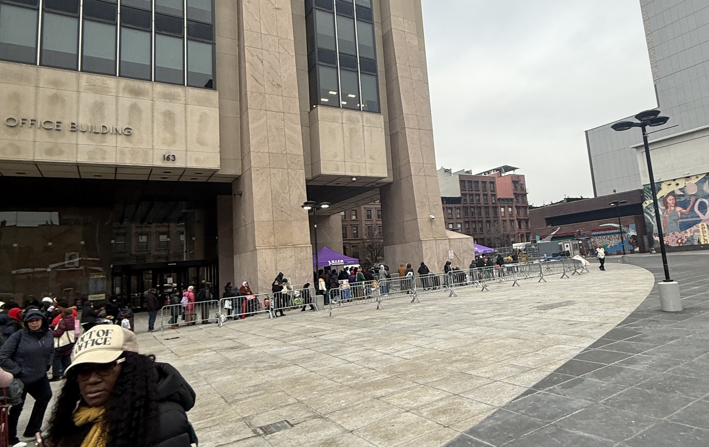

Central Harlem, New York — A historic 43-day federal shutdown delayed food benefit payments for 1.8 million New Yorkers ahead of Thanksgiving —and few neighborhoods felt the pinch as acutely as Central Harlem.
Central Harlem has one of the highest rates of food insecurity in the city. Nearly 26% of residents don’t have reliable access to enough food to meet their needs. Nearly one in four households depends on food stamps, now known as SNAP benefits, according to the Hunter College New York City Food Policy Center.
SNAP enrollment in Central Harlem has remained high for years. Data from Human Resources Administration (HRA) shows that SNAP enrollment in Central Harlem has stayed consistently high over the last six years, averaging between over 29,000 and more than 32,000 recipients from 2019 to 2025.
Even after the shutdown ended on Nov. 12, and SNAP benefits resumed, many residents said it revealed just how vulnerable the neighborhood remains.
“If a shutdown like this happens again, only poor people suffer,” said Ingrid Williams, 57 from Harlem. “I barely had any food, and the pantry lines were so long. I ended up going to my doctor’s office and they gave me food. I am going to start stacking up food from now on."
On Friday Nov. 21, hundreds of residents lined up outside the Adam Clayton Powell Jr. State Office Building in Central Harlem for Thanksgiving food distributions. Volunteers from local sororities, churches, and nonprofits said turnout was noticeably higher than at previous events.
“More people came this year than last year,” said Brianna Scott, a member of Zeta Phi Beta Sorority, Inc. “The shutdown didn’t create food insecurity — it amplified it.”
Matt Staubi, president of a charity organization that aims to help those in need by partnering with local underserved communities, said his group brought 600 turkeys this year. They joined 800 other birds brought by other organizations, he said.“This was definitely the longest line we’ve seen,” Staubi said. “People need help and support.”
The office of New York State Senator Cordell Cleare also participated in the Thanksgiving and produce giveaway. Housing and hunger advocate Velvet Johnson Ross, a representative from the office said the shutdown was an abomination to the country. “The fact that people have to wait on food lines in the nation that has money is an abomination.” Ross highlighted how closely food insecurity overlaps with housing instability in communities like Harlem. “Many people who have housing subsidies also have food subsidies,” she said.
At Salem United Methodist Church, Norma Willis, 65, who works for its food pantry, said demand barely reduced even after SNAP payments resumed.
“We serve about 200 to 300 people every Tuesday and Wednesday.We’ve seen more people since the shutdown till now,” she said. The pantry also has several new first-time visitors.
“People come from all over — even from the Bronx,” according to Willis.
While the shutdown affected most people, not all say they were affected as much. Diane Jenkins, 71, from Central Harlem said she was less affected than others because she stocked up food. “You have to be ahead of the game,” she said. Moving forward, people need to learn how to shop right.”
Diane said she survived the shutdown by gathering coupons on newspapers and saved up to buy food which she stocked up. “I buy bundles, I use coupons, I stock up,” she said. “That’s the only reason the shutdown didn’t hit me the way it hit others.”
But she worries for neighbors living from meal to meal. “People are not being educated on how to shop right. If this happens again, some won’t make it.”
Central Harlem’s reliance on SNAP shows a broader pattern across Upper Manhattan. When looking at SNAP recipients as a share of each district’s population(according to Population 2023 ACS-1 year data), while East Harlem ranks as the highest, with 33.8% of residents receiving benefits, Central Harlem still maintains a high percentage.
Even with SNAP restored, residents must now navigate new federal policy changes that will tighten work requirements and narrow exemptions for millions of Americans.
The city is implementing these new federal food benefit work requirements for Able-Bodied Adults Without Dependents— a term generally referring to recipients aged 18 to 64 who do not have a child under 14 in their household and are not disabled.
Alongside other broader policy adjustments under the One Big Beautiful Bill Act, the changes could reduce national SNAP enrollment and spending according to the Congressional Budget Office.
In Central Harlem where 22.7% of households rely on SNAP—the policy shift is expected to significantly redefine eligibility for the program.